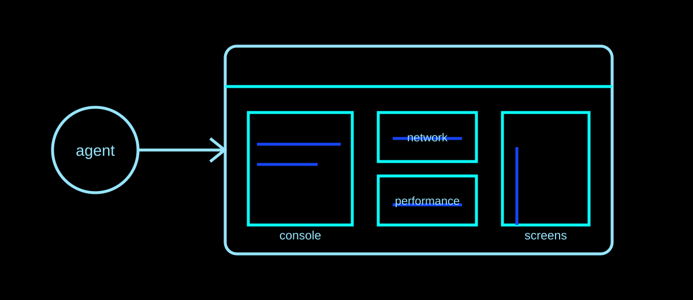

Browser debugging
Chrome DevTools MCP: Letting an AI Agent Inspect Chrome Carefully
Chrome DevTools MCP exposes Chrome DevTools capabilities to a coding agent through an MCP server and CLI. It can automate, inspect network requests, read console output, capture screenshots, and analyse performance—so the browser session needs deliberate boundaries.
Published

Quick definition
Chrome DevTools MCP is an open-source Chrome DevTools project for coding agents. Its official repository describes MCP and CLI interfaces that give an agent access to automation, debugging, network inspection, screenshots, and performance analysis in a live Chrome instance.
Use it for evidence, not theatre
A good first task is narrow: open a test page, reproduce one defect, capture the console error and the relevant network request, then report the observed result. This is more useful than telling an agent to “check the site” with no pass condition.
For front-end work, compare the initial HTML with the rendered page, check blocked resources, and capture the response status for a failed request. For performance work, record a trace with a stated scenario and device profile. Keep the evidence with the issue.
Privacy and permissions
The official project warns that MCP clients can inspect, debug, and modify data in the browser instance. Use an isolated testing profile when possible. Do not point an unreviewed agent at a browser holding personal mail, payment details, private dashboards, or production credentials.